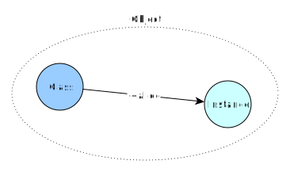
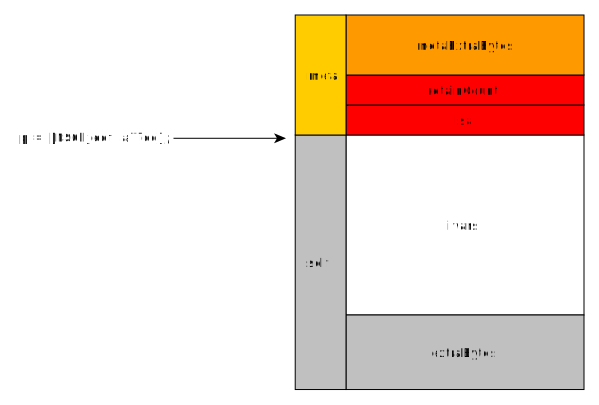

NSObject: +alloc
You will only very, very rarely be interested in overriding the +alloc
method, but now is a good time to learn about allocators in mulle-objc and the layout of objects in memory. If you are
interested in the more nitty-gritty details of mulle-objc, check out
Objective-C Runtime in Pictures.
struct mulle_allocator
First up, every allocation in mulle-objc is done through a mulle-allocator.
Using the (hidden) mulle_default_allocator, C code simplifies from
p = malloc( 1848);
if( ! p)
{
perror( "malloc:");
exit( 1);
}
to
p = mulle_malloc( 1848);
With mulle-allocator you get leak checking during tests as well.
If you want to know why and how this works, read the mulle-allocator README.md. For leak checking refer to the mulle-testallocator README.md
+alloc implementation
Classes create instances. Both classes and instances are objects.

The default implementation of +alloc is:
+ (instancetype) alloc
{
return( _MulleObjCClassAllocateInstance( self, 0));
}
_MulleObjCClassAllocateInstance destills down to the following code:
struct mulle_allocator *allocator;
allocator = _mulle_objc_infraclass_get_allocator( infra);
// extra bytes: 0 in +alloc case as seen above
return( __mulle_objc_infraclass_alloc_instance_extra( infra, extra, allocator));
Each class has its own allocator, that is used to allocate instances. Usually
this is the mulle_default_allocator. But that may vary on a per-class
basis.
If your instance needs some extra memory to store data you should use the same
allocator, so use MulleObjCInstanceAllocateMemory:
@interface Foo : NSObject
{
void *_buffer;
}
- (void *) bytes;
@end
- (instancetype) initWithLength:(NSUInteger) length
{
_buffer = MulleObjCInstanceAllocateMemory( self, length);
return( self);
}
- (void *) bytes
{
return( buffer);
}
- (void) dealloc
{
MulleObjCInstanceDeallocateMemory( self, _buffer);
[super dealloc];
}
| MulleObjC Instance Function | C equivalent |
|---|---|
MulleObjCInstanceAllocateNonZeroedMemory |
malloc |
MulleObjCInstanceReallocateNonZeroedMemory |
realloc |
MulleObjCInstanceAllocateMemory |
calloc |
MulleObjCInstanceDuplicateUTF8String |
strdup |
MulleObjCInstanceDeallocateMemory |
free |
The same functions are also available, with Class as the first parameter.
These can be used in + class methods.
| MulleObjC Class Function | C equivalent |
|---|---|
MulleObjCClassAllocateNonZeroedMemory |
malloc |
MulleObjCClassReallocateNonZeroedMemory |
realloc |
MulleObjCClassAllocateMemory |
calloc |
MulleObjCClassDuplicateUTF8String |
strdup |
MulleObjCClassDeallocateMemory |
free |
extraBytes and metaExtraBytes
An instance in memory looks like this:

The address returned by alloc is not the beginning of the memory block
allocated for the instance. It is the address after the isa pointer.
The memory block is divided into the user accessible ivars and extraBytes
“self” block and the “meta” block with negative offsets from “self”.
The “extraBytes” are the second parameter of _MulleObjCClassAllocateInstance.
Each instance can therefore have a unique size. The amount of metaExtraBytes
is fixed for every class and instance at the start of the program. Currently
this is an experimental and unused mulle-objc-runtime feature.
Creating an instance in pre-allocated memory
If you have sufficient memory already allocated, you can use
MulleObjCClassConstructInstance to turn this memory into one or as
many instances as can fit.
MulleObjCClassGetInstanceSize calculates the size needed for the memory
allocation and MulleObjCClassConstructInstance zeroes the memory and
initializes isa and the retainCount.
size_t size;
void *block;
Class myClass;
id obj;
...
size = MulleObjCClassGetInstanceSize( myClass);
block = my_malloc(size);
obj = MulleObjCClassConstructInstance( myClass, block, size, NO);
...
my_free( block); // not obj!
There are a lot of caveats:
- ascertain that
-deallocdoesn’t interfere with your memory scheme - ascertain that all instance variables are freed before deallocing
- calling
-initmay trigger-releaseand therefore-deallocin an error case
Reasonably, this scheme can only be used for very simple value type objects.
Tidbits
If you want to create an object, whose property objects are allocated with the same custom allocator as the owner object, you will have to subclass a lot.